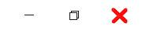

Windows support
La sécurité en un coup d'œil
Découvrez ce qui arrive à la sécurité de votre appareil et prenez toutes les mesures nécessaires。
-

Protection contre les virus et les menaces
action est requise. Exécutez une analyse pour vérifier les menaces。
-

Pare-feu et protection réseau
Aucune action nécessaire.
-

Protection du compte
Aucune action nécessaire。
-

Contrôle des applications et du navigateur
Aucune action nécessaire。

 Protection contre les virus et les menaces
Protection contre les virus et les menaces